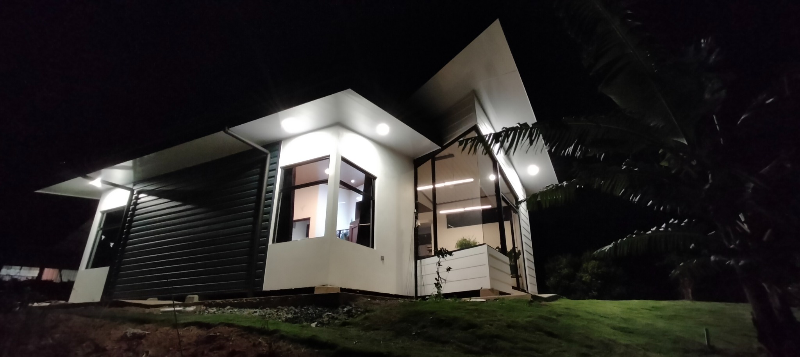

ARQUITECTURA / ILUMINACIÓN / MATERIA
El espacio
se revela
con la luz.
«La arquitectura no existe en la sombra; nace en el instante en que la toca la luz»
«La luz es la melodía que otorga voz a los materiales»
Diseño arquitectónico y pensamiento técnico desde la materia, la atmósfera y la experiencia humana.

01 / PORTAFOLIO
Proyectos.
Proyectos de diseño integral del Arq. Joselito Padilla Amador. En las obras construidas, también responsable de la dirección de obra.
02 / DISCIPLINAS
Áreas de práctica.
Cinco disciplinas conectadas por una misma manera de pensar el espacio.
Arquitectura
Diseño espacial, materialidad y soluciones contextualizadas.
↗Diseño de iluminación
Luminotecnia, fotometría y experiencias lumínicas.
↗Mobiliario de autor
Objetos funcionales y exploración de maderas nobles, incluido el laurel.
↗Peritaje y valuación
Análisis técnico y valoración de bienes inmuebles.
↗Protección contra incendios
Consultoría en sistemas pasivos y activos y revisión normativa.
↗03 / IDEAS PARA TU PROYECTO
Ideas que hacen
la diferencia.
Antes de construir, remodelar o transformar un espacio, una buena decisión puede cambiarlo todo. Descubrí una idea para tu próximo proyecto.
ARQUITECTURA
Una buena casa empieza antes del primer plano.
Entender cómo vivís, qué necesitás y cuánto querés invertir ayuda a diseñar espacios que realmente te funcionen.
DESARROLLO DIGITAL / ARQPUNTURA LABS
Herramientas de
diseño.
Exploramos nuevas formas de integrar tecnología y criterio profesional en los procesos de arquitectura, iluminación y diseño.
Herramientas digitales para pensar, analizar y desarrollar proyectos.
Estamos preparando este espacio. Nuevas herramientas se presentarán aquí cuando estén disponibles.
04 / EL ESTUDIO
Diseño con
criterio.
FUNDADOR / DIRECCIÓN
Arq. Joselito
Padilla Amador
Arquitecto y diseñador radicado en Costa Rica. Su práctica reúne arquitectura, luminotecnia, mobiliario de autor, valuación y consultoría técnica en protección contra incendios.
05 / CONTACTO
Hablemos de
tu proyecto.
Arquitectura, luz y soluciones técnicas comienzan con una conversación.
COSTA RICA / ATENCIÓN PROFESIONAL
Contame brevemente qué necesitás. El formulario preparará un correo desde tu aplicación de correo predeterminada.